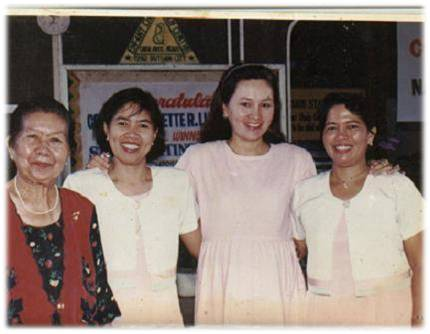

History
The idea of putting up a school was conceived by three hardworking teachers: Rose Tampil, Flora Aurea, and Nelly Peña. They shared the vision with a retired Public Schools District Supervisor, Mrs. Nila C. Quieta, who helped them turn it into reality. A corporation was born out of a commitment forged by five incorporators whose primary objective is to provide quality education to the children of Butuan City and ultimately, to the whole region of Caraga.
The school started its operation in 1992 with 88 Nursery, Kindergarten 1 and 2 pupils in Mrs. Quieta’s residence. The number of enrollees grew steadily year after year, which pushed the administrators to expand. A more spacious lot in Purok 1A, Upper Doongan, Butuan City was purchased in 1996.
The construction of a new school building started in School Year 2003-2004 which has been its permanent home since. Because of its new location, two of the Board of Directors, Nila C. Quieta, and her son, Denilo C. Quieta, voluntarily withdrew their membership from the corporation leaving the three incorporators determined to go on with their endeavors.
The school has climbed to excellence in the past years. It has shaped winners in various inter-school contests in the Divisional, Regional, and National Levels. Each pupil carries with them the marks of a true Cherian – God-fearing, respectful, well-mannered, brilliant, and fluent in speaking in English.
In School Year 2010 – 2011, the school branched out to San Francisco, Agusan del Sur. The satellite school bears the same mission-vision, philosophy of education, curriculum, programs, rules and regulations as the mother school. It started with 78 Nursery and Kindergarten pupils and three teachers.
Presently, Enfant Cheri continues to soar to greater heights. Adapting to the “new normal”, it currently offers Modified Home Schooling to its students where they will continue to learn through online classes with trained and equipped teachers who will teach, and with the cooperation of the students’ parents who will provide guidance.